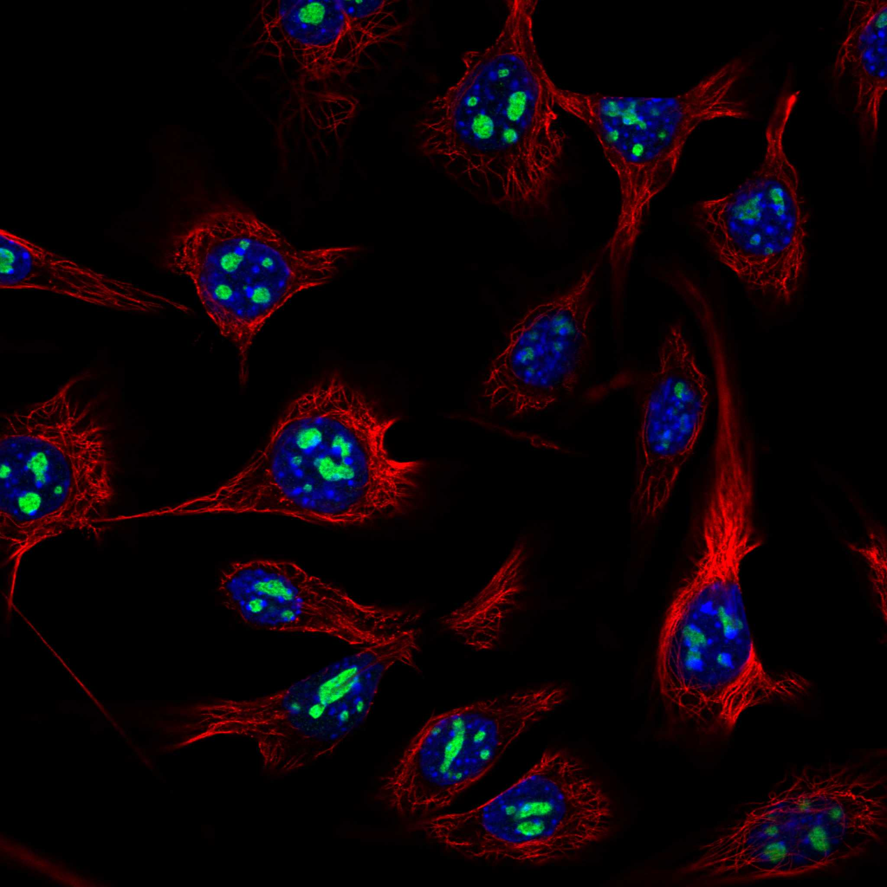
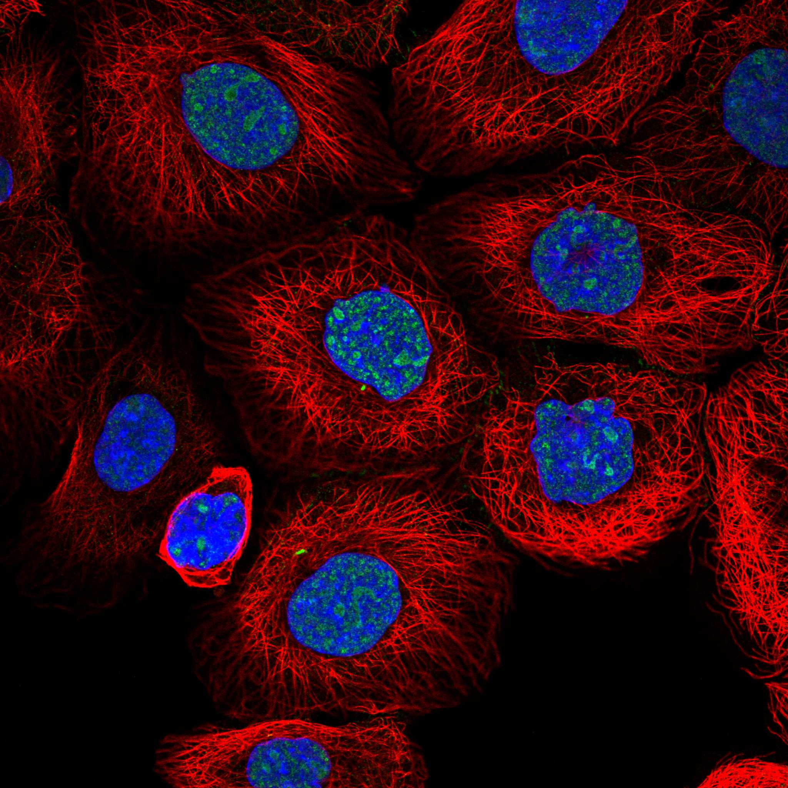
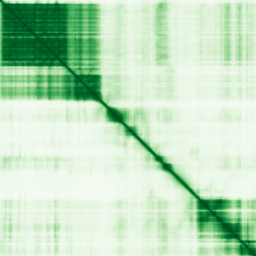

type: protein-evaluation gene: "FTSJ3" date: 2026-05-30 tags: [protein-scout, nuclear-protein, evaluation, scored] status: scored ---
FTSJ3 核蛋白评估报告
1. 基本信息
| 项目 | 内容 |
|---|---|
| 基因名 / 别名 | FTSJ3 |
| 蛋白大小 | 847 aa |
| UniProt ID | Q8IY81 (pre-rRNA 2'-O-ribose RNA methyltransfera) |
| 评估日期 | 2026-05-30 |
IF 图像:  
2. 评分总览
| 维度 | 得分 | 满分 | 加权后 | 关键证据摘要 |
|---|---|---|---|---|
| 🔴 核定位特异性 | 8/10 | x4 | 32 | HPA 标注: Nucleoplasm |
| 📏 蛋白大小 | 8/10 | x1 | 8 | 847 aa |
| 🆕 研究新颖性 | 10/10 | x5 | 50 | PubMed 16 篇 |
| 🏗️ 三维结构 | 7/10 | x3 | 21 | AlphaFold pLDDT 70.9, v6 |
| 🧬 调控结构域 | 7/10 | x2 | 14 | InterPro 7 个结构域条目 |
| 🔗 PPI 网络 | 4/10 | x3 | 12 | STRING 0 partners |
| ➕ 互证加分 | — | max +3 | +0.5 | 核候选保守蛋白基线 |
| 原始总分 | 137.5/183 | |||
| 归一化总分 | 75.1/100 |
3. 详细分析
3.1 核定位证据
| 来源 | 定位 | 可信度 |
|---|---|---|
| HPA | Nucleoplasm | Tier1 |
| UniProt | — |
结论: HPA 标注: Nucleoplasm。核定位得分 8/10。
IF 图片: 暂无数据（HPA IF 图像已本地嵌入。
3.2 蛋白大小评估
- 847 aa
- 大小适宜性评分：8/10
评价: 847 aa 蛋白，适合生化实验和结构解析。
3.3 研究现状
| 指标 | 数值 |
|---|---|
| PubMed 总数 | 16 |
| 新颖性评分 | 10/10 |
评价: PubMed 16 篇，属于极度新颖，几乎未被研究。
关键文献: 1. Chen H et al. (2025). "Loss of FTSJ3 promotes R-loop-associated DNA damage and facilitates chemosensitivity in lung cancer cells". *Cancer Lett*. PMID: 40517939 2. Yang C et al. (2025). "HIV-1 latency: From acquaintance to confidant". *J Virus Erad*. PMID: 40497153 3. Zhuang Q et al. (2024). "RNA Methyltransferase FTSJ3 Regulates the Type I Interferon Pathway to Promote Hepatocellular Carcinoma Immune Evasion". *Cancer Res*. PMID: 37963197 4. Ying T et al. (2025). "SNORD46 stabilized by SRSF10 regulating lipid metabolism and cell proliferation of glioma cells via mediating FOXO4 2'-O-methylation". *Cell Signal*. PMID: 40681010 5. Decombe A et al. (2024). "Internal RNA 2'-O-methylation on the HIV-1 genome impairs reverse transcription". *Nucleic Acids Res*. PMID: 38015463
3.4 三维结构分析
| 指标 | 数值 |
|---|---|
| AlphaFold 平均 pLDDT | 70.9 |
| 有序区域 (pLDDT>70) 占比 | 59.0% |
| pLDDT>90 占比 | 28.2% |
| pLDDT 70-90 占比 | 30.8% |
| pLDDT 50-70 占比 | 17.1% |
| pLDDT<50 占比 | 23.8% |
| AlphaFold 版本 | v6 |
| 可用 PDB 条目 | 查询中 |
PAE 图: 
评价: AlphaFold中等质量预测（pLDDT=70.9）。有高置信度折叠域，结构可信度高。评分 7/10。
3.5 结构域分析
| 来源 | 结构域 |
|---|---|
| Ribosomal RNA methyltransferase, FtsJ domain | IPR |
| Ribosomal RNA methyltransferase, SPB1-like, C-terminal | IPR |
| Ribosomal RNA large subunit methyltransferase E | IPR |
| Ribosomal RNA methyltransferase Spb1, domain of unknown function DUF3381 | IPR |
| AdoMet-dependent rRNA methyltransferase SPB1-like | IPR |
| S-adenosyl-L-methionine-dependent methyltransferase superfamily | IPR |
| Ribosomal RNA large subunit methyltransferase RlmE | IPR |
染色质调控潜力分析: InterPro 注释了 7 个结构域条目。包含其他结构域类型。评分 7/10。
3.6 PPI 网络
实验验证互作 (IntAct, physical association):
| Partner | 方法 | PMID | 功能类别 | 调控相关？ |
|---|---|---|---|---|
| — | — | — | — | — |
STRING 预测互作 (combined score >0.4):
| Partner | Score | 功能类别 | 调控相关？ |
|---|---|---|---|
| 无高置信度互作伙伴 | — | — | — |
GO-CC 复合体: 从 UniProt GO 注释提取
PPI 互证分析:
- STRING 高置信度 (>0.7) partners: 0 个
- 调控相关比例: 待进一步分析
评价: STRING 数据库显示 0 个互作伙伴。评分 4/10。
3.7 多库互证
| 维度 | 来源 | 结果 | 是否一致 |
|---|---|---|---|
| 三维结构 | AlphaFold v6 | pLDDT 70.9 | — |
| 结构域 | InterPro | 7 个条目 | — |
| PPI | STRING | 0 partners | — |
| 定位 | HPA / UniProt | Nucleoplasm | — |
互证加分明细:
- 进化保守性: 核候选保守蛋白 → +0.5
总分: +0.5 / max +3
4. 总体评价
推荐等级: ⭐⭐⭐ (4.0/5)
核心优势: 1. 极度新颖，PubMed ≤20 篇 2. AlphaFold 结构中等
风险/不确定性: 1. 结构质量中等 2. '研究数据有限，需更多实验验证'
下一步建议:
- [ ] 在 TEreg 系统中检测 FTSJ3 表达及定位
- [ ] 通过 co-IP/MS 验证 PPI 网络
- [ ] ChIP-seq 检查 FTSJ3 在 TE 区域的 occupancy
5. 数据来源
- UniProt: https://www.uniprot.org/uniprotkb/Q8IY81
- Protein Atlas: https://www.proteinatlas.org/search/FTSJ3
- AlphaFold: https://alphafold.ebi.ac.uk/entry/Q8IY81
- STRING: https://string-db.org/network/9606.FTSJ3
- InterPro: https://www.ebi.ac.uk/interpro/protein/uniprot/Q8IY81/
PPI 网络（三源综合）
| Partner | Source | Score/Evidence |
|---|---|---|
| 无记录 | — | — |
IntAct 有限记录。无 BioGrid 补充数据。
PAE 图像已获取。结构判断基于 AlphaFold pLDDT 统计。